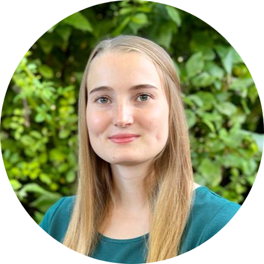

People
Principal Investigator

Paul Bürkner
Background: Statistics, Mathematics, and Psychology
Position: Full Professor for Computational Statistics
PostDocs
Daniel Habermann
Background: Computational Biology
Šimon Kucharský
Background: Computational Psychology
PhD Students
Javier Aguilar
Background: Mathematics and Statistics
Project: Intuitive Joint Priors for Bayesian Multilevel Models

Florence Bockting
Background: Cognitive Science and Psychology
Project: Simulation-Based Prior Distributions for Bayesian Models

Luna Fazio
Background: Biology and Statistics

Jacob Grytzka
Background: Statistics
Project: Regularization in Generalized Linear and Additive Multilevel Models
Co-Supervisor: Andreas Groll

Svenja Jedhoff
Background: Data Science
Project: Real-time spatio-temporal data analysis for monitoring logistics networks
Co-Supervisor: Anne Meyer
Lars Kühmichel
Background: Physics and Computer Science
Project: BayesFlow: Simulation Intelligence with Deep Learning
Co-Supervisor: Stefan Radev

Soham Mukherjee
Background: Statistics
Project: Probabilistic Models for Single-Cell RNA Sequencing Data
Co-Supervisor: Manfred Claassen

Philipp Reiser
Background: Physics and Computer Science
Project: Data-Integrated Training of Surrogate Models for Uncertainty Quantification
Co-Supervisor: Anneli Guthke

Marvin Schmitt
Background: Psychology and Computer Science

Maximilian Scholz
Background: Computer- and Software Engineering
Alumni
- Stefan Radev (2021 – 2023): PostDoc in my lab before becoming assistant professor at Rensselaer Polytechnic Institute, Troy, USA. University Website GitHub Linkedin